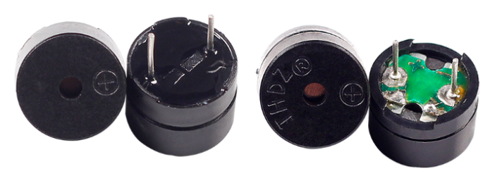
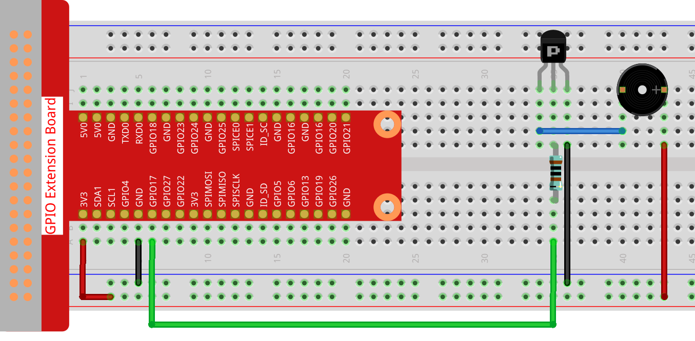

注釈
こんにちは、SunFounderのRaspberry Pi & Arduino & ESP32愛好家コミュニティへようこそ！Facebook上でRaspberry Pi、Arduino、ESP32についてもっと深く掘り下げ、他の愛好家と交流しましょう。
参加する理由は？
エキスパートサポート：コミュニティやチームの助けを借りて、販売後の問題や技術的な課題を解決します。
学び＆共有：ヒントやチュートリアルを交換してスキルを向上させましょう。
独占的なプレビュー：新製品の発表や先行プレビューに早期アクセスしましょう。
特別割引：最新製品の独占割引をお楽しみください。
祭りのプロモーションとギフト：ギフトや祝日のプロモーションに参加しましょう。
👉 私たちと一緒に探索し、創造する準備はできていますか？[ここ]をクリックして今すぐ参加しましょう！
1.2.1 アクティブブザー
前書き
このレッスンでは、PNPトランジスタでアクティブブザーを鳴らす方法を学習する。
部品

原理
ブザー
統合された構造を持つ電子ブザーの一種として、DC電源によって電圧供給されるブザーは、コンピューター、プリンター、コピー機、警報器、電子玩具、自動車用電子装置、電話、タイマー、その他の電子製品または音声装置で広く使用されている。ブザーは、アクティブとパッシブに分類できる（次の図を参照）。ピンが上を向くようにブザーを回し、緑色の回路基板を備えたブザーはパッシブブザーで、黒いテープで囲まれたブザーはアクティブである。
アクティブブザーとパッシブブザーの違い：
{kind=link}
アクティブブザーとパッシブブザーの違いは次の通りである：アクティブブザーには振動源が内蔵されているため、通電すると音が鳴る。ただし、パッシブブザーにはそのような振動源がないため、DC信号が使用されてもビープ音は鳴らない。代わりに、周波数が2K〜5Kの方形波を使用して駆動する必要がある。アクティブブザーは、多くの場合、複数の発振回路が内蔵されているため、パッシブブザーよりも高価である。
以下はブザーの電気記号である。両極の2つのピンが搭載されている。表面の+は陽極を表し、もう1つは陰極を表す。

ブザーのピンをチェックすることができ、長い方が陽極で、短い方が陰極である。接続時にそれらを混同しないでください。混同すると、ブザーが鳴らない。
回路図
この実験では、アクティブブザー、PNPトランジスタ、および1k抵抗器をトランジスタのベースとGPIOの間に使用して、トランジスタを保護する。Raspberry Pi出力のGPIO17にプログラミングによって低レベル（0V）が供給されると、電流飽和のためトランジスタが導通し、ブザーが音を出す。しかし、Raspberry PiのIOに高レベルが供給されると、トランジスターが切断され、ブザーは音を出さない。

実験手順
ステップ1： 回路を作る。（ブザーの両極に注意してください：+ラベルが付いている方が正極で、もう一方が負極である。）
{kind=link}
ステップ2： コードファイルを開く。
cd ~/davinci-kit-for-raspberry-pi/c/1.2.1/
ステップ3： コードをコンパイルする。
gcc 1.2.1_ActiveBuzzer.c -lwiringPi
ステップ4： EXEファイルを実行する。
sudo ./a.out
コードが実行されると、ブザーが鳴く。
コード
#include <wiringPi.h>
#include <stdio.h>
#define BeepPin 0
int main(void){
if(wiringPiSetup() == -1){ //when initialize wiring failed, print messageto screen
printf("setup wiringPi failed !");
return 1;
}
pinMode(BeepPin, OUTPUT); //set GPIO0 output
while(1){
//beep on
printf("Buzzer on\n");
digitalWrite(BeepPin, LOW);
delay(100);
printf("Buzzer off\n");
//beep off
digitalWrite(BeepPin, HIGH);
delay(100);
}
return 0;
}
コードの説明
digitalWrite(BeepPin, LOW);
この実験ではアクティブブザーを使用しているため、直流に接続すると自動的に音が鳴く。このスケッチは、I/Oポートを低レベル（0V）に設定して、トランジスタを管理し、ブザーを鳴らすためのものである。
digitalWrite(BeepPin, HIGH);
I/Oポートを高レベル（3.3V）に設定するため、トランジスターは通電されず、ブザーは鳴らない。